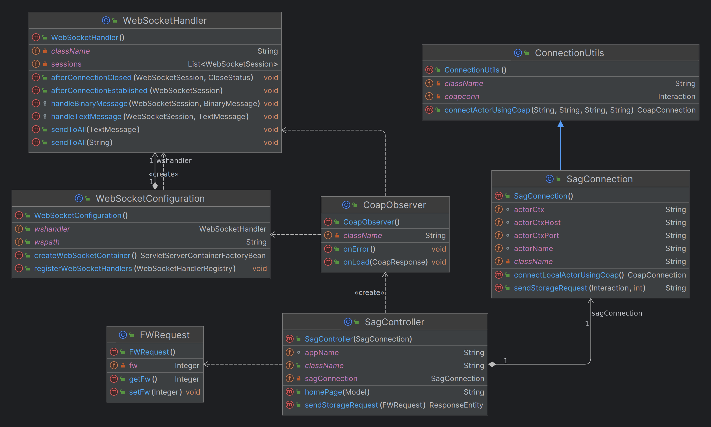
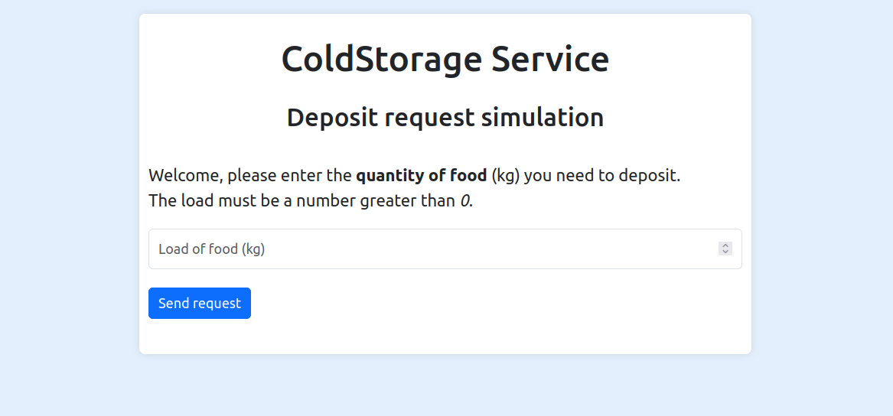

Introduction
Requirements
Requirement analysis
Problem analysis
Test plans
Project
ServiceAccessGUISim
Come anticipato in fase di analisi del problema, si è pensato di implementare questo componente software come un'applicazione web.
Abbiamo deciso di sviluppare l'applicazione utilizzando il framework Spring Boot, sia poiché permette di aggiungere funzionalità in poco tempo, sia allo scopo di uniformare lo stack tecnologico utilizzato dal progetto nel suo insieme (utilizzeremo Spring anche all'interno del MapConfigurator).
Architettura dell'applicazione
Comunicazione con il ColdStorageService
Questa applicazione serve per accedere ai servizi forniti dal ColdStorageService. La comunicazione con esso è quindi di cruciale importanza.
Abbiamo decisio di implementare la comunicazione tra le due componenti software tramite il protocollo Coap. Questa scelta è stata mossa dal fatto che la nostra software house ha già sviluppato classi e interfacce per implementare un concetto generale di connessione tramite appunto il protocollo Coap, all'interno della libreria unibo.basicomm23.
Nello Sprint0 abbiamo poi parlato del concetto di attori e del linguaggio Qak. Infatti, un fattore fondamentale che ci ha spinto a scegliere Coap come protocollo di comunicazione è che ogni attore è definito come una risorsa CoapObservable (osservabile tramite la classe CoapObserver definita nella suddetta libreria).
Diagramma delle classi
Nell'immagine seguente viene mostrato il diagramma UML delle classi del back-end dell'applicazione Web.
Prendiamo in analisi i singoli componenti:
- SagController: WebServer Controller dell'applicazione definito tramite annotazione del framework SpringBoot. Si occupa di inizializzare l'applicazione definendo un osservatore sull'attore interessato; funge poi da mediatore tra UI e back-end per l'invio al ColdStorageService della richiesta di deposito.
- SagConnection: componente che si occupa di stabilire, tramite
unibo.basicomm23, una connessione Coap con l'attore interessato nel progetto ColdStorageService; permette poi di implementare la comunicazione con l'attore stesso relativamente alla richiesta di deposito. - ConnectionUtils: definisce una nuova CoapConnection.
- CoapObserver: osservatore che, ad ogni aggiornamento emesso dal ColdStorageService, avvisa tutte le entità registrate ad esso tramite WebSocket.
Per l'aggiornamento automatico della pagina da parte del server utilizziamo le WebSocket. Abbiamo infatti un file ws_utils.js che definisce la connessione e gestisce i messaggi in arrivo in maniera opportuna.
- WebSocketConfiguration: implementa la classe WebSocketConfigurer di
org.springframework.web.socket.config.annotation. - WebSocketHandler: memorizza le sessioni registrate e alle quali inviare i messaggi.
Configurazione
Alcuni importanti parametri dell'applicazione possono essere configurati dal file application.properties.

Oltre a poter configurare il nome dell'applicazione che apparirà in alto nella pagina web e il banner da mostrare in console, sono presenti:
- server.port, per configurare la porta sulla quale apparirà la pagina web
- actor.name, per definire il nome dell'attore da osservare e al quale verrà inviata la richiesta di deposito
- actor.ctx.*, per specificare tutte le informazioni relative al contesto in cui è presente l'attore d'interesse
Front-end
Per la realizzazione della grafica dell'applicazione si fa uso di Bootstrap, una libreria utile per realizzare pagine web reattive e mobile-first, con HTML, CSS e JavaScript;

L'applicazione permette di inserire una quantità numerica che rappresenta i kg di carico da depositare e, previa validazione dell'input con eventuale toast di errore, invia la richiesta al ColdStorageService.
A questo punto possono presentarsi tre casi:
- richiesta accettata: l'utente viene notificato dell'accettazione della richiesta, indicandogli di attendere la presa in carico.
In questo contesto, due casi sono possibili:
- se passa troppo tempo, il messaggio viene dato per perso, avvisando l'utente e ricaricando la pagina
- arriva il messaggio di presa in carico, che viene mostrato in pagina, per poi ricaricarla
- richiesta rifiutata: l'utente viene avvisato del rifiuto e la pagina web si ricarica, permettendo una nuova interazione.
- errore in fase di richiesta: se la richiesta non va a buon fine o passa troppo tempo, l'utente viene notificato e la pagina web si ricarica, permettendo una nuova interazione.
Testing
Deployment
Distribuzione
Per il deployment di queste applicazioni si è deciso di utilizzare Docker,in modo da poter uniformare la metodologia di gestione della distribuzione dei vari componenti del servizio.
In particolare abbiamo creato dei Dockerfile, utilizzando l'apposito linguaggio dichiarativo, usati poi per creare le immagini che faranno parte dei container che eseguono i servizi.
Si riporta di seguito il Dockerfile usato per generare l'immagine di mapConfigurator.
FROM openjdk:11
EXPOSE 8015
VOLUME ["/data"]
ADD ./build/distributions/unibo.mapConfigurator-boot-2.2.tar /
WORKDIR unibo.mapConfigurator-boot-2.2/bin
CMD ["bash", "./unibo.mapConfigurator"]Allo scopo di velocizzare la creazione dei Dockerfile e delle rispettive immagini abbiamo implementato una serie di task Gradle che automatizzano questo compito, è possibile visualizzare queste task in un qualsiasi file build.gradle.kts (esempio).
Tutte le immagini docker relative a questo progetto saranno rese disponibili online a questo profilo Docker Hub.
Contestualmente al prossimo sprint verranno realizzate le apposite task Gradle per generare le immagini Docker per tutti i servizi coinvolti, così come la configurazione di un volume docker sfruttato dai container per file condivisi.
Controllo
Dati i vari servizi da gestire verrà progettata e messa a disposizione del cliente una applicazione dedicata alla gestione dei componenti del servizio, permettendo di manipolare impostazioni e valori di default delle applicazioni tramite un'interfaccia grafica.
Protocollo di avvio
Ad ora, in attesa della dockerizzazione di tutti i progetti e della creazione della suddetta applicazione, abbiamo definito il seguente protocollo di avvio dei vari servizi:
- VirtualRobot e basicRobot tramite compose delle immagine Docker
cd ./projects/unibo.basicrobot23 docker compose -f basicrobot23.yaml up -
ColdStorageService (progetto Qak)
cd ./projects/sprint1v0 gradlew run -
ServiceAccessGUISim (progetto Spring)
cd ./projects/unibo.serviceaccessGUISim gradlew bootRun